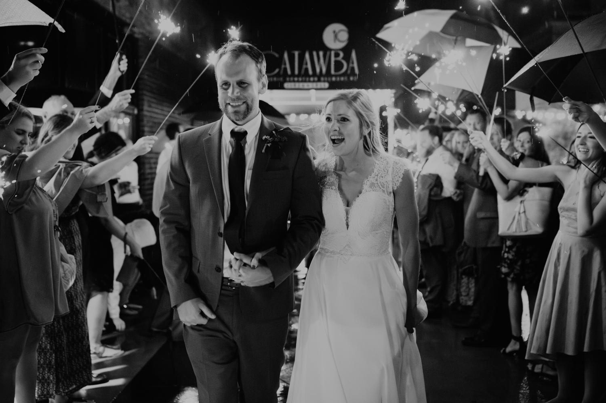

04 / The day
Your wedding day,
in ten moments.
From the rings on the table in the morning to the last toast, and the small decision that makes each moment easier.
By Alex Claudio Photography
Most wedding days pass through the same ten moments, in roughly the same order.
Each one goes more smoothly when a small choice is made a few weeks ahead rather than on the day. These are the choices we talk through with the couples we photograph, in the order the day happens.
Part 1 of 2
Before the ceremony
Gather the details in one place
The night before, put everything you want photographed into one box or bag: the invitation suite, rings, jewelry, shoes, perfume, vow books, letters, and anything borrowed or handed down. When it is all together, we can photograph it early without anyone searching drawers while you get ready.
If the flowers arrive separately, ask the florist to set aside a spare stem or your bouquet for the first part of the morning. And if a carefully styled layout of your details matters to you, start coverage about an hour before hair and makeup finish so there is time for it and for the room around you.
Get dressed by a window
Whoever helps you into your dress, suit, or jewelry will be in those photographs. Ask them to be dressed and ready before you are, so the pictures show the people you love at their best, not in a hotel robe.
Choose the room with the largest window and clear the area in front of it: suitcases, water bottles, garment bags, the breakfast tray. With both of us there, one of us can be with each of you while you get ready, so tell us where each of you will be and how long it takes to walk between the rooms.
Decide on a first look early
Seeing each other before the ceremony lets most of the portraits happen earlier, while your hair is fresh and the light is predictable. Without a first look, portraits of the two of you, the wedding party, and family all move after the ceremony and usually into cocktail hour.
Both choices work. Make the decision before you write the schedule, because it changes everything around it. Our wedding timeline guide shows a full day built around a first look, and what to rebuild if you would rather wait.
Keep the family list short and printed
Family photographs are where schedules most often slip. A list of about a dozen groupings usually fits in 20 to 25 minutes; every group after that adds time and keeps relatives waiting. Build the list around the combinations you would frame, and save the wider family for cocktail hour.
Write each group by name, print two copies, and give one to a relative who knows everyone and is happy to call people over. We keep the other copy and tick each group off, so nobody has to remember what is left.
Protect the half hour before
Finish photographs about 30 minutes before the ceremony. In our example timeline that is 3:25 to 4:00 p.m. You get time to drink water, touch up, and breathe, and the schedule has room to absorb a late start from hair and makeup.
While you rest, we photograph the ceremony space and guests arriving. If you do need portraits during that window, choose a spot guests will not walk past on their way in.
Part 2 of 2
The ceremony and reception
Welcome guests, then slow down
Many of your guests have travelled, taken a day off, or arranged childcare to be there. A small welcome at the entrance goes a long way: water and fans for a summer ceremony outdoors, blankets or umbrellas for a Seattle spring or autumn (our rain plan covers the rest).
At the front, turn toward each other and hold hands. You will remember more of it, and we get photographs of your faces instead of two people looking at the officiant. Ask your officiant to step to the side for the kiss, so nobody is standing between you and the camera for that moment.
Spend cocktail hour with your guests
If most portraits are finished, spend this hour with the people who came. Many of them will not get another real conversation with you until the end of the night, and these unposed minutes are often where the most natural photographs of the day happen.
If sunset falls during cocktail hour, step out for ten minutes of portraits in the evening light. We watch the time and bring you back before anyone notices you left.
Walk in as a wedding party
Introducing every member of the wedding party one by one can take ten minutes while guests wait for dinner, and most wedding parties would rather not walk in alone. Have them enter together, then make your own entrance.
If your parents are willing, bring them in just before you. It is their day too, and it gives us a photograph of them walking into the room you are about to enter.
Keep the dances together
If the thought of a first dance with everyone watching makes you nervous, schedule it straight after your entrance and follow it with any parent dances. Guests are already on their feet and looking at you, and the spotlight moments are finished before dinner is served.
Keep only the traditions that feel like yours. Cake cutting, bouquet tosses, and grand exits are all optional. Tell us which ones you are keeping and when, so we are in position rather than guessing.
Clear the table for the toasts
Tall centerpieces on a sweetheart table look beautiful from across the room and hide your faces during speeches. Ask your florist for low arrangements in front of you, or have the venue move the tall ones aside before toasts begin.
Ask speakers to hold the microphone rather than use a stand, and to stand where you can see them. We can then photograph the speaker and your reaction in the same frame. A gentle suggestion of about three minutes each keeps the room with them.
Send us your date and plans, and we will build these ten moments into your day with you.